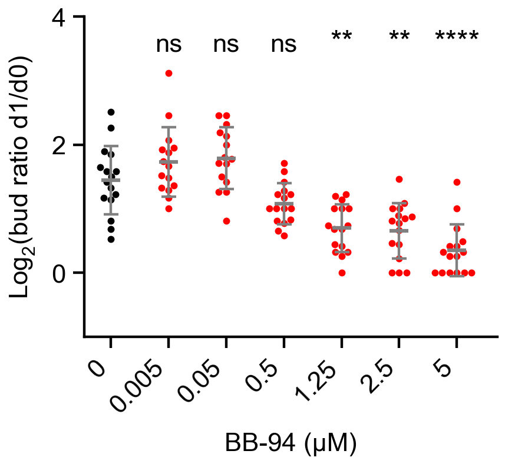

Each point is one gland's log2(day-1 bud count / day-0 bud count), paired by gland identity. Tests use the displayed log2 ratios, not the untransformed ratios tested in the notebook.
Error bar is SD.
Mann-Whitney U with Holm correction: two-sided comparisons of each nonzero dose with DMSO (0). Holm correction covers these 6 comparisons within this plot (family-wise alpha 0.05). All tested comparisons are displayed; comparisons between treated doses are not included.
Asterisks: * adjusted p < .05; ** < .01; *** < .001; **** < .0001; ns >= .05. Means and SD are descriptive summaries; the test compares ranks.
Different glands are treated as independent biological observations. Treatment groups are not paired. Embryo/litter identifiers are not available for modeling further clustering.
The 3 source cohorts are pooled as in the notebook. Cohort is retained in the exported gland table but is not a covariate in the tests. Only the selected baseline/final response is analyzed. For the supplied data this is day 1/day 0; future-washout day-2 counts are excluded.
Exact when either group has at most 8 glands and there are no pooled ties; otherwise asymptotic with tie and continuity correction.
Mann-Whitney does not require normality. It compares independent groups using ranks; a pure location/median interpretation additionally requires comparable distribution shapes. Unequal variances are not interpreted as evidence specifically about mean differences.
U is reported with dose B as the first sample. 2*U_b/(n_a*n_b)-1: positive means larger values tend to occur in dose B; ties contribute half to U. Mean differences are descriptive only. No parametric confidence intervals are attached to the rank-test results.
Explicit exclusions: 2 filename-marked placeholder glands; no real gland is excluded by a count threshold. The input audit records all excluded observations.
Input audit and explicit exclusions are recorded in the run JSON. Source notebooks and measurement files are unchanged.
| dose_um | n | mean | sd | variance |
|---|---|---|---|---|
| 0 | 16 | 1.4449 | 0.53698 | 0.28835 |
| 0.005 | 15 | 1.7291 | 0.54294 | 0.29479 |
| 0.05 | 15 | 1.7882 | 0.48287 | 0.23317 |
| 0.5 | 16 | 1.0789 | 0.32069 | 0.10285 |
| 1.25 | 16 | 0.69756 | 0.37428 | 0.14009 |
| 2.5 | 16 | 0.65869 | 0.43234 | 0.18691 |
| 5 | 16 | 0.34952 | 0.40433 | 0.16348 |
| dose_b_um | n_a | n_b | U_b | rank_biserial_b_minus_a | p_raw | p_adjusted | p_method | annotation |
|---|---|---|---|---|---|---|---|---|
| 0.005 | 16 | 15 | 154 | 0.283333 | 0.185302 | 0.185302 | asymptotic | ns |
| 0.05 | 16 | 15 | 165.5 | 0.379167 | 0.0750992 | 0.150198 | asymptotic | ns |
| 0.5 | 16 | 16 | 72.5 | -0.433594 | 0.0378116 | 0.113435 | asymptotic | ns |
| 1.25 | 16 | 16 | 30 | -0.765625 | 0.0002341 | 0.0011705 | asymptotic | ** |
| 2.5 | 16 | 16 | 31.5 | -0.753906 | 0.00029408 | 0.00117632 | asymptotic | ** |
| 5 | 16 | 16 | 12.5 | -0.902344 | 1.36013e-05 | 8.16075e-05 | asymptotic | **** |
| dose_a_um | dose_b_um | n_a | n_b | mean_difference_b_minus_a | U_b | rank_biserial_b_minus_a | p_raw | p_method | ties_present | method | p_adjusted | annotation |
|---|---|---|---|---|---|---|---|---|---|---|---|---|
| 0 | 0.005 | 16 | 15 | 0.284288 | 154 | 0.283333 | 0.185302 | asymptotic | True | Two-sided Mann-Whitney U + Holm | 0.185302 | ns |
| 0 | 0.05 | 16 | 15 | 0.343378 | 165.5 | 0.379167 | 0.0750992 | asymptotic | True | Two-sided Mann-Whitney U + Holm | 0.150198 | ns |
| 0 | 0.5 | 16 | 16 | -0.365912 | 72.5 | -0.433594 | 0.0378116 | asymptotic | True | Two-sided Mann-Whitney U + Holm | 0.113435 | ns |
| 0 | 1.25 | 16 | 16 | -0.747294 | 30 | -0.765625 | 0.0002341 | asymptotic | True | Two-sided Mann-Whitney U + Holm | 0.0011705 | ** |
| 0 | 2.5 | 16 | 16 | -0.786162 | 31.5 | -0.753906 | 0.00029408 | asymptotic | True | Two-sided Mann-Whitney U + Holm | 0.00117632 | ** |
| 0 | 5 | 16 | 16 | -1.09533 | 12.5 | -0.902344 | 1.36013e-05 | asymptotic | True | Two-sided Mann-Whitney U + Holm | 8.16075e-05 | **** |
Method references: SciPy Mann-Whitney U; Holm correction.